Boolean values, conditional execution, loops list and processing, logical and bitwise operations.
In this module, you will learn about.
Boolean values || If-else-if instruccions || The while and for loops || Flow control || Logical and bitwise operations || Lists and arrays

Questions and answers
A programmer writes a program and the program asks questions.
A computer executes the program and provides the answers
- Yes, this is true.
- No, this is false.
Comparison: equality operator.
Question: are two values equal?
To ask this question, you use the == (equal equal) operator.
Don't forget this important distintion:
=is an assignment operator, e.g.a=bassigns 'a' with the value of 'b'.==is the question are these values equal?,a==bcompares 'a' and 'b'.
Exercises.
Now let's ask a few questions. try to guess the answers.
Q.1 What is the result of the following comparison?
2==2 Q.2 What is the result of the following comparison?Trueof course, 2 is equal to 2. Python will answer True (remeber this pair of predefined literals,TrueandFalse- they're Python keywords, too).
2==2.
This question is not as easy as their first one. Luckly, Python is able to convert the integer value into its real equivalent, andconsequently, the answer is True.
Q.3 What is the result of the following comparison? 1==2
This should be easy. The answer will be (or rather, always is) False.
Equality: the equal to operator (==)
The == (equal to) operator compares the values of two operands. If they are equal, the result of the comparison is True. If they are not equal, the result of the comparison is False.
Look at the equality comparison below - what is the result of this operation?
var == 0
Note that we cannot find the answer if we do not know what value is currently stored in the variable var.
If the variable has been changed many times during the execution of your program, or its initial value is entered from the console, the answer to this question can be given only by Python and only at runtime.
Now imagine a programmer who suffers from insomnia, and has to count black and white sheep separately as long as there are exactly twice as many black sheep as white ones.
The question will be as follows:
black_sheep == 2 * white_sheep
Due to the low priority of the == operator, the question shall be treated as equivalent to this one:
black_sheep == (2 * white_sheep)
So, let's practice your understanding of the == operator now - can you guess the output of the code below?
var = 0 # assigning 0 to var print(var == 0) var = 1 # assigning 1 to var print(var == 0)Run the code and check if you were right.

Equal to operator.
Inequality: the not equal to operator (!=)
The != (not equal to) operator compares the values of two operands, too. Here is the difference: if they are equal, the result of the comparison is False. If they are not equal, the result of the comparison is True.
Now take a look at the inequality comparison below - can you guess the result of this operation?
var = 0 # assigning 0 to var print(var != 0) var = 1 # assigning 1 to var print(var != 0)Run the code and check if you were right.

Equal to operator.
Comparison operators: greater than
You can also ask a comparison question using the > (greater than) operator.
If you want to know if there are more black sheep than white ones, you can write it as follows:
black_sheep > white_sheep # greater than
True confirms it; False denies it.
Comparison operators: greater than or equal to
The greater than operator has another special, non-strict variant, but it's denoted differently than in classical arithmetic notation: >=(greater than or equal to).
There are two subsequent signs, not one.
Both of these operators (strict and non-strict), as well as the two others discussed in the next section, are binary operators with left-sided binding, and their priority is greater than that shown by == and !=.
If we want to find out whether or not we have to wear a warm hat, we ask the following question:
centigrade_outside ≥ 0.0 # greater than or equal to
Comparison operator: less than or equal to
As you've probably already guessed, the operators used in this case are: the < (less than) operator and its non-strict sibling: <= (less than or equal to). Look at this simple example:
current_velocity_mph < 85 # less than current_velocity_mph ≤ 85 # less than or equal toWe're going to check if there's a risk of being fined by the highway police (the first question is strict, the second isn't). Making use of the answers
What can you do with the answer (i.e., the result of a comparison operation) you get from the computer?
There are at least two possibilities: first, you can memorize it (store it in a variable) and make use of it later. How do you do that? Well, you would use an arbitrary variable like this:
answer = number_of_lions >= number_of_lionesses
The content of the variable will tell you the answer to the question asked.
The second possibility is more convenient and far more common: you can use the answer you get to make a decision about the future of the program.
You need a special instruction for this purpose, and we'll discuss it very soon. Now we need to update our priority table, and put all the new operators into it. It now looks as follows:
| Priority | Operator | |
| 1 | +,- | unary |
| 2 | ** | |
| 3 | *,/,//,% | |
| 4 | +,- | binary |
| 5 | <, <=, >, >= | |
| 6 | ==, != |
Lab: Question and answer.
Estimated time
5 minutes
Level of difficultyVery Easy
Objectives
Becoming familiar with the the input() function.
Becoming familiar with comparison operators in Python.
Using one of the comparison operators in Python, write a simple two-line program that takes the parameter n as input, which is an integer, and prints False if n is less than 100, and True if n is greater than or equal to 100.
Don't create any if blocks (we're going to talk about them very soon). Test your code using the data we've provided for you.
Sample input: 55
Expected output: False
Sample input: 99
Expected output: False
Sample input: 100
Expected output: True
Sample input: 101
Expected output: True
Sample input: -5
Expected output: False
Sample input: +123
Expected output: True

Conditions and conditional execution.
You already know how to ask Python questions, but you still don't know how to make reasonable use of the answers. You have to have a machanism which allow you to do something
if a condition is met, and not do it isn't.
It's just like in real life: you do certain things or you don't when a specific condition is met or not, e.g. you go for a walk if the weather is good, or stay home if it's wet and cold.
To make such decision, Python offers a special instruction. Due to its nature and its application, it's called a condition instruction (or conditional statement).
There are several variants of it. We'll start with the simplest, increasing the difficulty slowly.
The first form of a conditional statement, which you can see below is written very informally but figuratively:
if true_or_not:This conditional statement consists of the following, strictly necessary, elementes in this and this order only:
do_this_if_true
-
The
ifkeyword. - One or more white spaces.
-
An expression (a question or an answer) whose value will be interpreted solely in terms of
True(when its value is non-zero) andFalse(when it's equal to zero). - A colon followed by a newline.
- An indented instruction or set of instructions (at least one instruction is absolutely required), the indentation may be achieved in two ways - by inserting a particular number of spaces (the recommedation is to use four spaces of indentation ), or by using the tab character; note: if there is more than one instruction in the indented part, the indentation should be the same in all lines, even though it may look the same if you use tabs mixed whit spaces, it's important to make all indentations exactly the same Python 3 does not allow mixing spaces and tabs for indentation.
-
If the
true_or_notexpression represent the truth(i.e, its value not equal to zero), the indented statement(s) will be executed. -
If the
true_or_notexpression does not represent the truth (i.e, its value is equal to zero), the indented statement(s) will be omitted (ignored), and the next executed instruction will be the one after the original indentation level.
if the weather is good, we'll go for a walkAs you can see, having lunch is not a conditional activity and doesn't depend on the weather.
then, we'll have lunch
Knowing what conditions influence our behavior,and assuming that we have the parameterless functions
go_for_a_walk()
and have_lunch(), we can write the following snippet:
if the_weather_is_good: go_for_a_walk() have_lunch()
Conditional execution: the if statement
If s certain sleepless Python developer falls asleep when he or she counts 120 sheep, and the sleep-inducing procedure may be implemented as a special function named sleep_and_dream(), the whole code takes the
following shape:
if sheep_counter >= 120: # Evaluate a test expression sleep_and_dream() # execute if test expression is True
You can read it as: if
sheep_counter is greater than or equal to 120, then fall asleep and dream (i.e, execute the sleep_and_dream function). We've said that conditionally executed statements have to be indented. This creates a very legible structure, clearly demostrating all possible execution paths in the code. Take a look at the folloing code:
As you can see, making a bed, taking a shower and falling asleep and dreaming are all executed conditionally - when sheep_counter reaches the desired limit.if sheep_counter >= 120: make_a_bed() take_a_shower() sleep_and_dream() feed_the_sheepdogs()
Feeding the sheepdogs, however, is always done (i.e., the feed_the_sheepdogs() function is not indented and does not belong to the if block, which means it is always executed.)
Now we're going to discuss another variant of the conditional statement, which also allows you to perform an additional action when the condition is not met.
Conditional execution: the if-else statement
We started out with a simple phrase which read: If the weather is good, we will go for a walk.
Note - there is not a word about what will happen if the weather is bad. We only know that we won't go outdoors, but what we could do instead is not known. We may want to plan something in case of bad weather, too.
We can say, for example: If the weather is good, we will go for a walk, otherwise we will go to a theater.
Now we know what we'll do if the conditions are met, and we know what we'll do if not everything goes our way. In other words, we have a "Plan B".
Python allows us to express such alternative plans. This is done with a second, slightly more complex form of the conditional statement, the if-else statement:
if true_or_false_condition: perform_if_condition_true else: perform_if_condition_false
Thus, there is a new word:
else - this is a keyword. The part of the code which begins with
else says what to do if the condition specified for the if is not met (note the colon after the word). The if-else execution goes as follows:
- If the condition evaluates to True (its value is not equal to zero), the perform_if_condition_true statement is executed, and the conditional statement comes to an end.
- If the condition evaluates to False (it is equal to zero), the perform_if_condition_false statement is executed, and the conditional statement comes to an end.
The if-else statement: more conditional execution
By using this form of conditional statement, we can describe our plans as follows:
if the_weather_is_good:
go_for_a_walk()
else:
go_to_a_theater()
have_lunch()
If the weather is good, we'll go for a walk. Otherwise, we'll go to a theatre. No matter if the weather is good or bad, we'll have lunch afterwards (after the walk or after going to the theatre).
Everything we've said about indentation works in the same manner inside the else branch:
if the_weather_is_good:
go_for_a_walk()
have_fun()
else:
go_to_a_theater()
enjoy_the_movie()
have_lunch()
Nested if-else statements
Now let's discuss two special cases of the conditional statement.
First, consider the case where the instruction placed after the if is another if.
Read what we have planned for this Sunday. If the weather is fine, we'll go for a walk. If we find a nice restaurant, we'll have lunch there. Otherwise, we'll eat a sandwich.
If the weather is poor, we'll go to the theater. If there are no tickets, we'll go shopping in the nearest mall.
Let's write the same in Python. Consider carefully the code here:
if the_weather_is_good:
if nice_restaurant_is_found:
have_lunch()
else:
eat_a_sandwich()
else:
if tickets_are_available:
go_to_the_theater()
else:
go_shopping()
Here are two important points:
-
This use of the
ifstatement is know as nesting, remeber that everyelserefers to theifwhich lies at the same ondentation level, you need to know this to determine how the ifs and elses pair up - Consider hot the indentation improves readability and makes the code easier to understantd and trace.
The elif statement
The second special case introduces another new Python keyword: elif. As you probably suspect, it's a shorter form of else if.
elif is used to check more than just one condition, and to stop when the first statement which is true is found.
Our next example resembles nesting, but the similarities are very slight. Again, we'll change our plans and express them as follows: If the weather is fine, we'll go for a walk, otherwise if we get tickets,
we'll go to the theater, otherwise if there are free tables at the restaurant, we'll go for lunch; if all else fails, we'll return home and play chess.
Have you noticed how many times we've used the word otherwise? This is the stage where the elif keyword plays its role.
Let's write the same scenario using Python:
if the_weather_is_good
go_for_a_walk()
elif tickets_are_available:
go_to_the_theater()
elif table_is_available:
go_for_lunch()
else:
play_chess_at_home()
The way to assemble subsequent if-elif-else statements is sometimes called a cascade. Notice again how the indentation improves the readability of the code.
Some additional attention has to be paid in this case:
-
You mustn't use
elsewithout a precedingif -
elseis always the last branch of the cascade, regardless of whether you've usedelifor not. -
elseis an optional part of the cascade, and may be omitted. - If there is an else branch in the cascade, only one of all the branches is executed.
- If there is no else branch, it's possible that none of the available branches is executed.
Analyzing code samples
Now we're going to show you some simple yet complete programs. We won't explain them in detail, because we consider the comments (and the variable names) inside the code to be sufficient guides.
All the programs solve the same problem - they find the largest of several numbers and print it out.
Example 1:
We'll start with the simplest case - how to identify the larger of two numbers:
# read two numbers
number1 = int(input("Enter the first number: "))
number2 = int(input("Enter the second number: "))
# choose the larger number
if number1 > number2:
larger_number = number1
else:
larger_number = number2
# print the result
print("The larger number is:", larger_number)

The above snippet should be clear - it reads two integer values, compares them, and finds which is the larger.
Example 2:
Now we're going to show you one intriguing fact. Python has an interesting feature, look at the code below:
# read two numbers
number1 = int(input("Enter the first number: "))
number2 = int(input("Enter the second number: "))
# choose the larger number
if number1 > number2: larger_number = number1
else: larger_number = number2
# print the result
print("The larger number is:", larger_number)

This style, however, may be misleading, and we're not going to use it in our future programs, but it's definitely worth knowing if you want to read and understand someone else's programs.
There are no other differences in the code.
Example 3:
It's time to complicate the code - let's find the largest of three numbers. Will it enlarge the code? A bit.We assume that the first value is the largest. Then we verify this hypothesis with the two remaining values.
Look at the code below:
# read three numbers
number1 = int(input("Enter the first number: "))
number2 = int(input("Enter the second number: "))
number3 = int(input("Enter the third number: "))
# We temporarily assume that the first number
# is the largest one.
# We will verify this soon.
largest_number = number1
# we check if the second number is larger than current largest_number
# and update largest_number if needed
if number2 > largest_number:
largest_number = number2
# we check if the third number is larger than current largest_number
# and update largest_number if needed
if number3 > largest_number:
largest_number = number3
# print the result
print("The largest number is:", largest_number)

Pseudocode and introduction to loops
You should now be able to write a program which finds the largest of four, five, six, or even ten numbers.
You already know the scheme, so extending the size of the problem will not be particularly complex.
But what happens if we ask you to write a program that finds the largest of two hundred numbers? Can you imagine the code?
You'll need two hundred variables. If two hundred variables isn't bad enough, try to imagine searching for the largest of a million numbers.
Imagine a code that contains 199 conditional statements and two hundred invocations of the input() function. Luckily, you don't need to deal with that. There's a simpler approach.
We'll ignore the requirements of Python syntax for now, and try to analyze the problem without thinking about the real programming. In other words, we'll try to write the algorithm, and when we're
happy with it, we'll implement it.
In this case, we'll use a kind of notation which is not an actual programming language (it can be neither compiled nor executed), but it is formalized, concise and readable. It's called pseudocode.
Let's look at our pseudocode below:
What's happening in it?line 01largest_number = -999999999line 02number = int(input())line 03if number == -1:line 04print(largest_number)line 05exit()line 06if number > largest_number:line 07largest_number = numberline 08go to line 02
Firstly, we can simplify the program if, at the very beginning of the code, we assign the variable
largestNumber with a value which will be smaller than any of the entered numbers.
We'll use -999999999 for that purpose. Secondly, we assume that our algorithm will not know in advance how many numbers will be delivered to the program. We expect that the user will enter as many numbers as she/he wants - the algorithm will work well with one hundred and with one thousand numbers. How do we do that?
We make a deal with the user: when the value
-1 is entered, it will be a sign that there are no more data and the program should end its work. Otherwise, if the entered value is not equal to
-1, the program will read another number, and so on. The trick is based on the assumption that any part of the code can be performed more than once - precisely, as many times as needed.
Performing a certain part of the code more than once is called a loop. The meaning of this term is probably obvious to you.
Lines 02 through 08 make a loop. We'll pass through them as many times as needed to review all the entered values.
Can you use a similar structure in a program written in Python? Yes, you can.
Extra info
Python often comes with a lot of built-in functions that will do the work for you. For example, to find the largest number of all, you can use a Python built-in function called max(). You can use it with multiple arguments. Analyze the code below:
# read three numbers
number1 = int(input("Enter the first number: "))
number2 = int(input("Enter the second number: "))
number3 = int(input("Enter the third number: "))
# check which one of the numbers is the greatest
# and pass it to the largest_number variable
largest_number = max(number1, number2, number3)
# print the result
print("The largest number is:", largest_number)
Using the Python function: max()
Using the Python function: min()
LAB- Comparison operators and conditional execution.
Estimated time
5-10 minutes
Level of difficulty
Easy
Objectives
Becoming familiar with the the input() function
Becoming familiar with comparison operators in Python
Becoming familiar with the concept of conditional execution
Scenario
Spathiphyllum,
more commonly known as a peace lily or white sail plant, is one of the most popular indoor houseplants that filters out harmful toxins from the air.
Some of the toxins that it neutralizes include benzene, formaldehyde, and ammonia.
Imagine that your computer program loves these plants. Whenever it receives an input in the form of the word Spathiphyllum, it involuntarily shouts to the
console the following string: "Spathiphyllum is the best plant ever!"
Write a program that utilizes the concept of conditional execution, takes a string as input, and:
- prints the sentence
"Yes - Spathiphyllum is the best plant ever!"to the screen if the inputted string is "Spathiphyllum" (upper-case). - prints
"No, I want a big Spathiphyllum!"if the inputted string is "spathiphyllum" (lower-case). - prints
"Spathiphyllum! Not [input]!"otherwise.
Note:[input]is the string taken as input.
Test Data
Sample input: spathiphyllum
Expected output: No, I want a big Spathiphyllum!
Sample input: pelargonium
Expected output: Spathiphyllum! Not pelargonium!
Sample input: Spathiphyllum
Expected output: Yes - Spathiphyllum is the best plant ever!
My solution

LAB - Essentials of the if-else statement
Estimated time
10-15 minutesLevel of difficulty
Easy/MediumObjectives
Familiarize the student with:- Using the if-else instruction to branch the control path.
- Building a complete program that solves simple real-life problems.
Scenario
Once upon a time there was a land - a land of milk and honey, inhabited by happy and prosperous people. The people paid taxes, of course - their happiness had limits. The most important tax, called the Personal Income Tax (PIT for short) had to be paid once a year, and was evaluated using the following rule:- If the citizen's income was not higher than 85,528 thalers, the tax was equal to 18% of the income minus 556 thalers and 2 cents (this was the so-called tax relief)
- If the income was higher than this amount, the tax was equal to 14,839 thalers and 2 cents, plus 32% of the surplus over 85,528 thalers.
- It should accept one floating-point value: the income.
- Next, it should print the calculated tax, rounded to full thalers. There's a function named round() which will do the rounding for you - you'll find it in the skeleton code in the editor.
Test your code using the data we've provided.
Test Data
Sample input: 10000Expected output: The tax is: 1244.0 thalers
Sample input: 100000
Expected output: The tax is: 19470.0 thalers
Sample input: 1000
Expected output: The tax is: 0.0 thalers
Sample input: -100
Expected output: The tax is: 0.0 thalers


LAB - Essentials of the if-elif-else statement
Estimated time
10-15 minutesLevel of difficulty
Easy/MediumObjectives
Familiarize the student with:- Using the
if-elif-elsestatement. - Finding the proper implementation of verbally defined rules.
- Testing code using sample input and output.
Scenario
As you surely know, due to some astronomical reasons, years may be leap or common. The former are 366 days long, while the latter are 365 days long.Since the introduction of the Gregorian calendar (in 1582), the following rule is used to determine the kind of year:
- If the year number isn't divisible by four, it's a common year.
- Otherwise, if the year number isn't divisible by 100, it's a leap year.
- Otherwise, if the year number isn't divisible by 400, it's a common year.
- Otherwise, it's a leap year.
The code should output one of two possible messages, which are Leap year or Common year, depending on the value entered.
It would be good to verify if the entered year falls into the Gregorian era, and output a warning otherwise: Not within the Gregorian calendar period. Tip: use the != and % operators.
Test your code using the data we've provided.
Test Data
Sample input:2000
Expected output: Leap year Sample input:
2015
Expected output: Common year Sample input:
1999
Expected output: Common year Sample input:
1996
Expected output: Leap year Sample input:
1580
Expected output: Not within the Gregorian calendar period
Solution

Key takeaways
-
The comparison (or the so-called relational) operators are used to compare values. The table below illustrates how the comparison operators work, assuming that x = 0, y = 1, and z = 0:
Operator Description Example == Returns if operands' values are equal, and False otherwise x == y # False
x == z # True!= Returns True if operands' values are not equal, and False otherwise x != y # True
x != z # False> True if the left operand's value is greater than the right operand's value, and False otherwise x > y # False
y > z # True< True if the left operand's value is less than the right operand's value, and False otherwise x < y # True
y < z # False≥ True if the left operand's value is greater than or equal to the right operand's value, and False otherwise x >= y # False x >= z # True
y >= z # True≤ True if the left operand's value is less than or equal to the right operand's value, and False otherwise x <= y # True x <= z # True
y <= z # False -
When you want to execute some code only if a certain condition is met, you can use a conditional statement:
- A single if statement, e.g.:
x = 10 if x == 10: # condition print("x is equal to 10") # executed if the condition is True
- A series of if statements, e.g.:
x = 10 if x > 5: # condition one print("x is greater than 5") # executed if condition one is True if x < 10: # condition two print("x is less than 10") # executed if condition two is True if x == 10: # condition three print("x is equal to 10") # executed if condition three is True
Each if statement is tested separately.
- An if-else statement, e.g.:
- A series of if statements followed by an else, e.g.:x = 10 if x < 10: # condition print("x is less than 10") # executed if the condition is True else: print("x is greater than or equal to 10") # executed if the condition is False
x = 10 if x > 5: # True print("x > 5") if x > 8: # True print("x > 8") if x > 10: # False print("x > 10") else: print("else will be executed")
Each if is tested separately. The body of else is executed if the last if is False.
- The if-elif-else statement, e.g.:x = 10 if x == 10: # True print("x == 10") if x > 15: # False print("x > 15") elif x > 10: # False print("x > 10") elif x > 5: # True print("x > 5") else: print("else will not be executed")
If the condition for if is False, the program checks the conditions of the subsequent elif blocks - the first elif block that is True is executed. If all the conditions are False, the else block will be executed.
- Nested conditional statements, e.g.:x = 10 if x > 5: # True if x == 6: # False print("nested: x == 6") elif x == 10: # True print("nested: x == 10") else: print("nested: else") else: print("else")
Key takeaways: continued
Exercise nº 1
Exercise nº 2
Exercise nº 3
Exercise nº 4
Exercise nº 5
Exercise nº 6
Looping your code whit while
Do you agree with the statement presented below?
while there is something to doNote that this rcord also declares that if there is nothing to do, at all will happen. In general, in Python, an loop can be represented as follows:
do it
If you notice some similarities to the if instruction, that's quite all right. Indeed, the syntactic difference is only one: you use the word while instead of the word if.whileconditional_expression:
instruction
The semantic difference is more important: when the condition is met, if performs its statements only once; while repeats the execution as long as the condition evaluates to True.
Note: all the rules regarding indentation are applicable here, too. We'll show you this soon.
Look at the algorithm below:
while conditional_expression: instruction_1It is now important to remember that:
instruction_2
instruction_3
..
..
instruction_n
- If you want to execute more than one statement inside one while, you must (as with if) indent all the instructions in the same way.
- An instruction or set of instructions executed inside the while loop is called the loop's body.
- If the condition is False (equal to zero) as early as when it is tested for the first time, the body is not executed even once (note the analogy of not having to do anything if there is nothing to do).
- The body should be able to change the condition's value, because if the condition is True at the beginning, the body might run continuously to infinity - notice that doing a thing usually decreases the number of things to do).
An infinite loop
An infinite loop, also called an endless loop, is a sequence of instructions in a program which repeat indefinitely (loop endlessly). Here's an example of a loop that is not able to finish its execution:
while True:This loop will infinitely print
print("I'm stuck inside a loop.")
"I'm stuck inside a loop." on the screen. If you want to get the best learning experience from seeing how an infinite loop behaves, launch IDLE, create a New File, copy-paste the above code, save your file, and run the program. What you will see is the never-ending sequence of
"I'm stuck inside a loop." strings printed to the Python console window. To terminate your program, just press Ctrl-C (or Ctrl-Break on some computers).
This will cause the so-called KeyboardInterrupt exception and let your program get out of the loop. We'll talk about it later in the course. Let's go back to the sketch of the algorithm we showed you recently. We're going to show you how to use this newly learned loop to find the largest number from a large set of entered data. Analyze the program carefully. Locate the loop's body and find out how the body is exited:
Check how this code implement the algorithm we showed you earlier.# we will store the current largest number here largest_number = -999999999 # input the first value number = int(input("Enter a number or type -1 to stop: ")) # if the number is not equal to -1, we will continuewhile number != -1:# is number larger than largest_number? if number > largest_number: # yes, update largest_number largest_number = number # input the next number number = int(input("Enter a number or type -1 to stop: ")) # print the largest number print("The largest number is:", largest_number)
The while loop: more examples.
LAB: Essential of the while loop - Gess the secret number.
Estimated time.
15 minutesLevel of difficulty.
EasyObjectives.
Familiarize the student with:- Using the while loop.
- Reflecting real-life situations in computer code.
Scenario.
A junior magician has picked a secret number. He has hidden it in a variable named secret_number. He wants everyone who run his program to play the Guess the secret number game, and guess what number he has picked for them. Those who don't guess the number will be stuck in an endless loop forever! Unfortunately, he does not know how to complete the code.Your task is to help the magician complete the code in the editor in such a way so that the code:
- Will ask the user to enter an integer number.
- Will use a while loop.
- Will check whether the number entered by the user is the same as the number picked by the magician. If the number chosen by the user is different than the magician's secret number, the user should see the message "Ha ha! You're stuck in my loop!" and be prompted to enter a number again. If the number entered by the user matches the number picked by the magician, the number should be printed to the screen, and the magician should say the following words: "Well done, muggle! You are free now."
EXTRA INFO.
By the way, look at the print() function. The way we've used it here is called multi-line printing. You can use triple quotes to print strings on multiple lines in order to make text easier to read, or create a special text-based design. Experiment with it.
My solution

Looping your code with for
Another kind of loop available in Python comes from the observation that sometimes it's more important to count the "turns" of the loop than to check the conditions.
Imagine that a loop's body needs to be executed exactly one hundred times. If you would like to use the while loop to do it, it may look like this:
It would be nice if somebody could do this boring counting for you. Is that possible?i = 0 while i < 100: # do_something() i += 1
Of course it is - there's a special loop for these kinds of tasks, and it is named for.
Actually, the for loop is designed to do more complicated tasks - it can "browse" large collections of data item by item. We'll show you how to do that soon, but right now we're going to present a simpler variant of its application.
Take a look at the snippet:
There are some new elements. Let us tell you about them:for i in range(100): # do_something() pass
- The for keyword opens the for loop; note - there's no condition after it; you don't have to think about conditions, as they're checked internally, without any intervention.
- Any variable after the for keyword is the control variable of the loop; it counts the loop's turns, and does it automatically.
- The in keyword introduces a syntax element describing the range of possible values being assigned to the control variable.
- The range() function (this is a very special function) is responsible for generating all the desired values of the control variable; in our example, the function will create (we can even say that it will feed the loop with) subsequent values from the following set: 0, 1, 2 .. 97, 98, 99; note: in this case, the range() function starts its job from 0 and finishes it one step (one integer number) before the value of its argument.
- Note the pass keyword inside the loop body - it does nothing at all; it's an empty instruction - we put it here because the for loop's syntax demands at least one instruction inside the body (by the way - if, elif, else and while express the same thing).
for i in range(24):
print("The value of i is currently", i)
Note:
- The loop has been executed ten times (it's the range() function's argument)- The last control variable's value is 9 (not 10, as it starts from 0, not from 1)
The range() function invocation may be equipped with two arguments, not just one:
for i in range(5, 20):
print("The value of i is currently", i)
The last argument shows the first value the control variable will not be assigned.
Note: the range() function accepts only integers as its arguments, and generates sequences of integers.
Can you guess the output of the program? Run it to check if you were right now, too. The first value shown is 5 (taken from the range()'s first argument.)
The last is 19 (although the range()'s second argument is 20).
More about the for loop and the range() function with three arguments.
The range() function may also accept three arguments- take a look at the code in the editor.
The third arguments is an increment - it's a value added to control the variable at every loop turn (as you may suspect, the defaultvalue of the increment is 1. ).
Can you tell us how many lines will appear in the console and what values they will contain?
Run the program to find ut if out if you were right.
You should be able to see the following lines in the console window:
The value of i is currently 2Do you know why? The irst argument passed to the
The value of i is currently 5
range() function tells us what the starting number of the sequence is (hence --> 'POR LO TANTO' 2 in the output). The second argument tells the function where to
stop the sequence (the function generates numbers up to the number indicated by the second argument, but does not include it).Finally, the third argument indicate the step, which actually means the difference between each number in the sequence of
numbers generated by the function. 2 (starting number) → 8 (5 increment by 3 equals 8 - the numbers isn't within the range from 2 to 8, because the stop parameter
is not included in the sequence of numbers generated by the function). Note: If the set generated by the
range() function is empty, the loop won't execute its body at all. Just like here - there will be no output:
for i in range (1, 1):Note: The set generated by the
print("The value of i is currently ", i)
range() has to be sorted in ascending order. There's no way to force the range() to create a set in a different form. This means that the range()'s second argument must be greater
than the first. Thus, there will be no output ere, either:
for i in range (2,12, 3):
print("The value of i is currently ", i )
.PNG)
pow = 1
for exp in range (16):
print("2 to the power of ", exp, " is ", pow)
pow *=2
.PNG)
The
exp variable is used as a control variable for the loop, and indicates the current value of the exponent. The exponentiation itself is replaced by multiplying by two. Since 20 is equal to 1, then 2 x 1 is equal to 21, 21 x 2 is equal
to 22 and so on.
Lab. Essentials of the for loop - counting mississippily.
Estimated time
5 minutes.Level of difficulty
Very easyObjectives
Familiarize the student with:- Using the for loop.
- Reflecting real-life situations in computer code.
Scenario
Do you know what Mississippi is? Well, it's the name of one of the states and rivers in the United States. The Mississippi River is about 2,340 miles long, which makes it the second longest river in the United States (the longest being the Missouri River). It's so long that a single drop of water needs 90 days to travel its entire length!The word Mississippi is also used for a slightly different purpose: to count mississippily.
If you're not familiar with the phrase, we're here to explain to you what it means: it's used to count seconds.
The idea behind it is that adding the word Mississippi to a number when counting seconds aloud makes them sound closer to clock-time, and therefore "one Mississippi, two Mississippi, three Mississippi" will take approximately an actual three seconds of time! It's often used by children playing hide-and-seek to make sure the seeker does an honest count.
Your task is very simple here: write a program that uses a for loop to "count mississippily" to five. Having counted to five, the program should print to the screen the final message "Ready or not, here I come!"
Use the skeleton we've provided in the editor.
EXTRA INFO
Note that the code in the editor contains two elements which may not be fully clear to you at this moment: the import time statement, and the sleep() method. We're going to talk about them soon.For the time being, we'd just like you to know that we've imported the time module and used the sleep() method to suspend the execution of each subsequent print() function inside the for loop for one second, so that the message outputted to the console resembles an actual counting. Don't worry - you'll soon learn more about modules and methods.
Expected output
1 Mississippi
2 Mississippi
3 Mississippi
4 Mississippi
5 Mississippi
The break and continue statements
So far, we've treated the body of the loop as an indivisible and inseparable sequence of instructions that are performed completely at every turn of the loop. However, as developer, you could be faced with the following choices:
- It appears that it's unnecessary to continue the loop as a whole; you should refrain from further execution of the loop's body and go further.
- It appears that you need to start the next turn of the loop without completing the execution of the current turn.
These two instructions are:
-
break- exits the loop immediately, and unconditionally ends the loop's operation; the program begins to execute the nearest instruction after the loop's body. -
continue- behaves as if the program has suddenly reached the end of the body; the next turn is started and the condition expression is tested immediately.

More examples
Let's return to our program that recognizes the largest among the entered numbers. We'll convert it twice, using the break and continue instructions.
Analyze the code, and judge whether and how you would use either of them. The break variant goes here:

continue variant:
Lab. The break statement - Stuck in a loop
Estimated time
10 minutes.Level of difficulty
EasyObjectives
Familiarize the student with:- using the break statement in loops.
- reflecting real-life situations in computer code.
Scenario
The break statement is used to exit/terminate a loop.Design a program that uses a while loop and continuously asks the user to enter a word unless the user enters "chupacabra" as the secret exit word, in which case the message "You've successfully left the loop." should be printed to the screen, and the loop should terminate.
Don't print any of the words entered by the user. Use the concept of conditional execution and the break statement.

(Aquí no limpio la pantalla para ver los intentos)
Lab. The continue statement - The Ugly Vowel Eater
Estimated time
10-15 minutesLevel of difficulty
EasyObjectives
Familiarize the student with:- Using the continue statement in loops.
- Reflecting real-life situations in computer code.
Scenario
The continue statement is used to skip the current block and move ahead to the next iteration, without executing the statements inside the loop.It can be used with both the while and for loops.
Your task here is very special: you must design a vowel eater! Write a program that uses:
- A for loop.
- The concept of conditional execution (if-elif-else).
- The continue statement.
- Ask the user to enter a word.
- Use
userWord = userWord.upper()to convert the word entered by the user to upper case; we'll talk about the so-called string methods and the upper() method very soon - don't worry. - Use conditional execution and the continue statement to "eat" the following vowels A, E, I, O, U from the inputted word.
- Print the uneaten letters to the screen, each one of them on a separate line.
Test data
Sample input:Gregory
Expected output:
GSample input:
R
G
R
Y
abstemious
Expected output:
BSample input:
S
T
M
S
IOUEA
Expected output:
My solution


Outputs.
The while loop and else branch
Both loops, while and for, have one interesting (and rarely used) feature.
We'll show you how it works - try to judge for yourself if it's usable and whether you can live without it or not.
In other words, try to convince yourself if the feature is valuable and useful, or is just syntactic sugar.
Take a look at the snippet in the editor. There's something strange at the end - the else keyword.
As you may have suspected, loops may have the else branch too, like ifs.
The loop's else branch is always executed once, regardless of whether the loop has entered its body or not.
Can you guess the output? Run the program to check if you were right.
Modify the snippet a bit so that the loop has no chance to execute its body even once:
i = 5
while i < 5:
print(i)
i += 1
else:
print("else: ", i)
The while's condition is False at the beginning - can you see it? Run and test the program, and check whether the else branch has been executed or not.

The for loop ant the else branch
for loops behave a bit differently - take a look at the snippet in the editor and run it.
The output may be a bit surprising.
The i variable retains its last value.
Modify the code a bit to carry out one more experiment.
i = 111
for i in range(2, 1):
print(i)
else:
print("else:", i)
Can you guess the output? The loop's body won't be executed here at all. Note: we've assigned the i variable before the loop.
Run the program and check its output.

Note: if the control variable doesn't exist before the loop starts, it won't exist when the execution reaches the else branch.
How do you feel about this variant of else?
Now we're going to tell you about some other kinds of variables. Our current variables can only store one value at a time, but there are variables that can do much more - they can store as many values as you want.
Lab. Essentials of the while loop
Estimated time
20-30 minutesLevel of difficulty
MediumObjectives
Familiarize the student with:-
Using the
while loop - Finding the proper implementation of verbally defined rules
- Reflecting real-life situation in computer code.
Scenario
Listen to this story: a boy and his father, a computer programmer, are playing with wooden blocks. They are building a pyramid.Their pyramid is a bit weird, as it is actually a pyramid-shaped wall - it's flat. The pyramid is stacked according to one simple principle: each lower layer contains one block more than the layer above.
The figure illustrates the rule used by the builders:

Your task is to write a program which reads the number of blocks the builders have, and outputs the height of the pyramid that can be built using these blocks.
Note: the height is measured by the number of fully completed layers - if the builders don't have a sufficient number of blocks and cannot complete the next layer, they finish their work immediately.
Test your code using the data we've provided.
Test Data
Sample input:6 Expected output:
The height of the pyramid: 3 Sample input:
20 Expected output:
The height of the pyramid: 5 Sample input:
1000 Expected output:
The height of the pyramid: 44 Sample input:
2 Expected output:
The height of the pyramid: 1 My solution
Result. (Click for go in) Result. (Click for go in)
Lab. Collatz hypothesis
Estimated time
20 minutesLevel of difficulty
MediumObjectives
Familiarize the student with:- using the while loop.
- converting verbally defined loops into actual Python code.
Scenario
In 1937, a German mathematician named Lothar Collatz formulated an intriguing hypothesis (it still remains unproven) which can be described in the following way:- Take any non-negative and non-zero integer number and name it c0
- If it's even, evaluate a new c0 as c0 ÷ 2
- Otherwise, if it's odd, evaluate a new c0 as 3 × c0 + 1
- If c0 ≠ 1, skip to point 2.The hypothesis says that regardless of the initial value of c0, it will always go to 1
Write a program which reads one natural number and executes the above steps as long as c0 remains different from 1. We also want you to count the steps needed to achieve the goal. Your code should output all the intermediate values of c0, too.
Hint: the most important part of the problem is how to transform Collatz's idea into a while loop - this is the key to success.
Test your code using the data we've provided.
Test Data
Sample input: 15 Expected output:Sample input: 16 Expected output:46 23 70 35 106 53 160 80 40 20 10 5 16 8 4 2 1 steps = 17
Sample input: 1023 Expected output:8 4 2 1 steps = 4
3070 1535 4606 2303 6910 3455 10366 5183 15550 7775 23326 11663 34990 17495 52486 26243 78730 39365 118096 59048 29524 14762 7381 22144 11072 5536 2768 1384 692 346 173 520 260 130 65 196 98 49 148 74 37 112 56 28 14 7 22 11 34 17 52 26 13 40 20 10 5 16 8 4 2 1 steps = 62
Solution

Code

Test Data
Key takeaways
1. There are two types of loops in Python: while and for:
- The while loop executes a statement or a set of statements as long as a specified boolean condition is true, e.g.:
# Example 1
while True:
print("Stuck in an infinite loop.")
# Example 2
counter = 5
while counter > 2:
print(counter)
counter -= 1
- The for loop executes a set of statements many times; it's used to iterate over a sequence (e.g., a list, a dictionary, a tuple, or a set - you will learn about them soon) or other objects that are iterable (e.g., strings).
You can use the for loop to iterate over a sequence of numbers using the built-in range function. Look at the examples below:
2. You can use the break and continue statements to change the flow of a loop:# Example 1 word = "Python" for letter in word: print(letter, end="*") # Example 2 for i in range(1, 10): if i % 2 == 0: print(i)
- You use break to exit a loop, e.g.:
- You use continue to skip the current iteration, and continue with the next iteration, e.g.:text = "OpenEDG Python Institute" for letter in text: if letter == "P": break print(letter, end="")
3. The while and for loops can also have an else clause in Python. The else clause executes after the loop finishes its execution as long as it has not been terminated by break, e.g.:text = "pyxpyxpyx" for letter in text: if letter == "x": continue print(letter, end="")
4. The range() function generates a sequence of numbers. It accepts integers and returns range objects. The syntax of range() looks as follows: range(start, stop, step), where:n = 0 while n != 3: print(n) n += 1 else: print(n, "else") print() for i in range(0, 3): print(i) else: print(i, "else")
-
Startis an optional parameter specifying the starting number of the sequence (0 by default). -
Stopis an optional parameter specifying the end of the sequence generated (it is not included). -
And
stepis an optional parameter specifying the difference between the numbers in the sequence (1 by default.).
for i in range(3): print(i, end=" ") # outputs: 0 1 2 for i in range(6, 1, -2): print(i, end=" ") # outputs: 6, 4, 2
Key takeaways: continued
Exercise 1
Create a for loop that counts from 0 to 10, and prints odd numbers to the screen. Use the skeleton below:for i in range(1, 11):Sample solution:
# line of code
# line of code
for i in range(0, 11): if i % 2 != 0: print(i)
Exercise 2
Create a while loop that counts from 0 to 10, and prints odd numbers to the screen. Use the skeleton below:x = 1Sample solution:
while x < 11:
# line of code
# line of code
# line of code
x = 1 while x < 11: if x % 2 != 0: print(x) x += 1
Exercise 3
Create a program with a for loop and a break statement. The program should iterate over characters in an email address, exit the loop when it reaches the @ symbol, and print the part before @ on one line. Use the skeleton below:for ch in "john.smith@pythoninstitute.org":Sample solution:
if ch == "@":
# line of code
# line of code
for ch in "john.smith@python-institute.org": if ch == "@": break print(ch, end="")
Exercise 4
Create a program with a for loop and a continue statement. The program should iterate over a string of digits, replace each 0 with x, and print the modified string to the screen. Use the skeleton below:Sample solution:for digit in "0165031806510": if digit == "0": # line of code # line of code # line of code
for digit in "0165031806510":
if digit == "0":
print("x", end="")
continue
print(digit, end="")
Exercise 5
What is the output of the following code?n = 3 while n > 0: print(n + 1) n -= 1 else: print(n)
4
3
2
0
Exercise 6
What is the output of the following code?n = range(4) for num in n: print(num - 1) else: print(num)
-1
0
1
2
3
Exercise 7
What is the output of the following code?for i in range(0, 6, 3): print(i)
0
3
Logic and bit operations in Python. | and, or, not
Have you noticed that the conditions we've used so far have been very simple, not to say, quite primitive? The conditions we use in real life are much more complex. Let's look at this sentence:
If we have some free time, and the weather is good, we will go for a walk.
We've used the conjunction and, which means that going for a walk depends on the simultaneous fulfilment of these two conditions. In the language of logic, such a connection of conditions is called a conjunction. And now another example:
If you are in the mall or I am in the mall, one of us will buy a gift for Mom.
The appearance of the word or means that the purchase depends on at least one of these conditions. In logic, such a compound is called a disjunction.
It's clear that Python must have operators to build conjunctions and disjunctions. Without them, the expressive power of the language would be substantially weakened. They're called logical operators.
and
One logical conjunction operator in Python is the word and. It's a binary operator with a priority that is lower than the one expressed by the comparison operators. It allows us to code complex conditions without the use of parentheses like this one:
counter > 0 and value == 100
If we consider the conjunction of A and B, the set of possible values of arguments and corresponding values of the conjunction looks as follows:
| Argument A | False | False | True | True |
| Argument B | False | True | False | True |
A and B |
False | False | False | True |
or
A disjunction is the word or. It's a binary operator with a lower priority than and (just like + compared to * ).
Its truth table is as follows.
| Argument A | False | False | True | True |
| Argument B | False | True | False | True |
A or B |
False | True | True | True |
not
In addition, there's another operator that can be applied for constructing conditions. It's a unarity operator performing a logical negotion. Its operation is simple : it turns truth into falsehood and falsehood into truth.
This operator is written as the word not, and its priority is very high: the same as the unary + and -. Its truth table is simple.
| Argument | False | True |
not Argument |
True | False |
Logical expressions
Let's create a variable named var and assign 1 to it. The following conditions are pairwise equivalent:
print(var > 0)
print(not(var <= 0))
print(var != 0)You may be familiar with De Morgan's laws. They say that:
print(not (var == 0))
The negation of a disjunction is the conjunction of the negations.
not ( p and q ) == ( not p ) or (not q)Note how the parentheses have been used to code the expressions - we put theem to improve readability.
not (p or q) == (not p) and (not q)
We should add that none of these two-argument operators can be used in the abbreviated form know as
op=. This exception
is worth remembering
Logical values vs. single bits
Logical operators take their arguments as a whole regardless of how many bits they contain. The operators are aware only of the value: zero (when all the bits are reset) means False, not zero (when at least ine bit is set) means True.
The result of their operations is one of these values: False or True. This means that snippet will assign the value True to the j variable if i is not zero, otherwise, it will be False.
i = 1
j = not not i
Bitwise operators
However, there are four operators that allow you to manipulate single bits of data. They are called bitwise operators.
They cover all the operations we mentioned before in the logical context, and one additional operator. This is the xor (as in exclusive or) operator, and is denoted as ^ (caret).
Here are all of them:
&(ampersand)-Bitwise conjugation.|(bar)-Bitwise disjunction.~(tilde)-Bitwise negation.^(caret)-Bitwise exclusive or (xor).
Bitwise operations (&, | and ^)
| Arg A | Arg B | Arg B & Arg B | Arg A | Arg B | Arg A ^ Arg B |
| 0 | 0 | 0 | 0 | 0 |
| 0 | 1 | 0 | 1 | 1 |
| 1 | 0 | 0 | 1 | 1 |
| 1 | 1 | 1 | 1 | 0 |
Bitwise operations (~)
| Arg | ~Arg |
| 0 | 1 |
| 1 | 0 |
-
&requires exactly two1s to provide1as the result. -
|requires at least one1to provide1as the result. -
^requires exactly one1to provide1as the result.
The difference in the operation of the logical and bit operators is important: the logical operators do not penetrate into the bit level of its argument. They're only interested in the final integer value.
Bitwise operators are stricter: they deal with every bit separately. If we assume that the integer variable occupies 64 bits (which is common in modern computer systems), you can imagine the bitwise operation as a 64-fold evaluation of the logical operator for each pair of bits of the arguments. This analogy is obviously imperfect, as in the real world all these 64 operations are performed at the same time (simultaneously).
Logical vs. bit operations. Continued
We'll now show you an example of the difference in operation between the logical and bit operations. Let's assume that the following assignments have been performed:
i = 15If we assume that the integers are stored with 32 bits, the bitwise image of the two variables will be as follows:
j = 22
i: 00000000000000000000000000001111The assignment is given:
j: 00000000000000000000000000010110
log = i and jWe are dealing with a logical conjunction here. Let's trace the course of the calculations. Both variables i and j are not zeros, so will be deemed to represent True. Consulting the truth table for the and operator, we can see that the result will be True. No other operations are performed.
log: TrueNow the bitwise operation - here it is:
bit = i & jThe
& operator will operate with each pair of corresponding bits separately, producing the values of the relevant bits of the result. Therefore, the result will be as follows:
i 000000000000000000000000000These bits correspond to the integer value of six. Let's look at the negation operators now. First the logical one:01111
j 00000000000000000000000000010110
bit = i & j 00000000000000000000000000000110
logneg = not iThe logneg variable will be set to False - nothing more needs to be done.
The bitwise negation goes like this:
bitneg = ~iIt may be a bit surprising: the bitneg variable value is -16. This may seem strange, but isn't at all. If you wish to learn more, you should check out the binary numeral system and the rules governing two's complement numbers.
i 0000000000000000000000000000Each of these two-argument operators can be used in abbreviated form. These are the examples of their equivalent notations:1111
bitneg = ~i 11111111111111111111111111110000
x = x & y x &= y x = x | y x |= y x = x ^ y x ^= y How do we deal with single bits?
We'll now show you what you can use bitwise operators for. Imagine that you're a developer obliged to write an important piece of an operating system. You've been told that you're allowed to use a variable assigned in the following way:
flagRegister = 0x1234The variable stores the information about various aspects of system operation. Each bit of the variable stores one yes/no value. You've also been told that only one of these bits is yours - the third (remember that bits are numbered from zero, and bit number zero is the lowest one, while the highest is number 31). The remaining bits are not allowed to change, because they're intended to store other data. Here's your bit marked with the letter x:
flagRegister = 0000000000000000000000000000x000You may be faced with the following tasks:
1. Check the state of your bit - you want to find out the value of your bit; comparing the whole variable to zero will not do anything, because the remaining bits can have completely unpredictable values, but you can use the following conjunction property:
If you apply the & operation to the flagRegister variable along with the following bit image:x & 1 = x x & 0 = 0
00000000000000000000000000001000(note the 1 at your bit's position) as the result, you obtain one of the following bit strings:
- 00000000000000000000000000001000 if your bit was set to
1 - 0000000000000000000000000000000 if your bit was reset to
0
Let's build a bit mask to detect the state of your bit. It should point to the third bit. That bit has the weight of 23 = 8. A suitable mask could be created by the following declaration:
theMask = 8
You can also make a sequence of instructions depending on the state of your bit i here it is:
2. Reset your bit - you assign a zero to the bit while all the other bits must remain unchanged; let's use the same property of the conjunction as before, but let's use a slightly different mask - exactly as below:if flagRegister & theMask: # my bit is set else: # my bit is reset
11111111111111111111111111110111
Note That the mask was created as a result of the negation of all the bits of theMask variable. Resetting the bit is simple, and looks like this (choose the one you like more):
3. Set your bit - you assign a 1 to your bit, while all the remaining bits must remain unchanged; use the following disjunction property:flagRegister = flagRegister & ~theMask 0flagregister &= ~theMask
x | 1 = 1You're now ready to set your bit with one of the following instructions:
x | 0 = x
flagRegister = flagRegister | theMask4. Negate your bit - you replace a 1 with a 0 and a 0 with a 1. You can use an interesting property of the xor operator:
flagRegister |= theMask
x ^ 1 = ~xand negate your bit with the following instructions:
x ^ 0 = x
flagRegister = flagRegister ^ theMask flagRegister ^= theMask
Binary left shift and binary right shift
Python offers yet another operation relating to single bits: shifting. This is applied only to integer values, and you mustn't use floats as arguments for it.
You already apply this operation very often and quite unconsciously. How do you multiply any number by ten? Take a look:
12345 × 10 = 123450
As you can see, multiplying by ten is in fact a shift of all the digits to the left and filling the resulting gap with zero.
Division by ten? Take a look:
12340 ÷ 10 = 1234
Dividing by ten is nothing but shifting the digits to the right.
The same kind of operation is performed by the computer, but with one difference: as two is the base for binary numbers (not 10), shifting a value one bit to the left thus corresponds to multiplying it by two; respectively, shifting one bit to the right is like dividing by two (notice that the rightmost bit is lost).
The shift operators in Python are a pair of digraphs: << and >>, clearly suggesting in which direction the shift will act.
value << bits value >> bitsThe left argument of these operators is an integer value whose bits are shifted. The right argument determines the size of the shift.
It shows that this operation is certainly not commutative.
The priority of these operators is very high. You'll see them in the updated table of priorities, which we'll show you at the end of this section.
Take a look at the shifts in the editor window.

The final print() invocation produces the following output:
17 68 8Note:
- 17 // 2 → 8 (shifting to the right by one bit is the same as integer division by two)
- 17 * 4 → 68 (shifting to the left by two bits is the same as integer multiplication by four)
Priority Operator 1 ~, +, - unary 2 ** 3 *, /, //, % 4 +, - binary 5 <<, >> 6 <, <=, >, >= 7 ==, != 8 & 9 | 10 =, +=, -=, *=, /=, %=, &=, ^=, |=, >>=, <<=
Key takeways
and → if both operands are true, the condition is true, e.g., (True and True) is True. or →if any of the operands are true, the condition is true, e.g., (True or False) is True. not → returns false if the result is true, and returns true if the result is false, e.g., not True is False. x = 15, which is 0000 1111 in binary.
y = 16, which is 0001 0000 in binary.
& does a bitwise and, e.g., x & y = 0, which is 0000 0000 in binary.| does a bitwise or, e.g., x | y = 31, which is 0001 1111 in binary.˜ does a bitwise not, e.g., ˜ x = 240, which is 1111 0000 in binary.^ does a bitwise xor, e.g., x ^ y = 31, which is 0001 1111 in binary.>> does a bitwise right shift, e.g., y >> 1 = 8, which is 0000 1000 in binary.<< does a bitwise left shift, e.g., y << 3 = , which is 1000 0000 in binary.Why do we need list?
It may happen that you have to read, store, process, and finally, print dozens, maybe hundreds, perhaps even thousands of numbers. What then? Do you need to create a separate variable for each value? Will you have to spend long hours writing statements like the one below?
If you don't think that this is a complicated task, then take a piece of paper and write a program that:var1 = int(input()) var2 = int(input()) var3 = int(input()) var4 = int(input()) var5 = int(input()) var6 = int(input()) : :
- reads five numbers.
- prints them in order from the smallest to the largest (NB, this kind of processing is called sorting).
So far, you've learned how to declare variables that are able to store exactly one given value at a time. Such variables are sometimes called scalars by analogy with mathematics. All the variables you've used so far are actually scalars. Think of how convenient it would be to declare a variable that could store more than one value. For example, a hundred, or a thousand or even ten thousand. It would still be one and the same variable, but very wide and capacious. Sounds appealing? Perhaps, but how would it handle such a container full of different values? How would it choose just the one you need?
What if you could just number them? And then say: give me the value number 2; assign the value number 15; increase the value number 10000.
We'll show you how to declare such multi-value variables. We'll do this with the example we just suggested. We'll write a program that sorts a sequence of numbers. We won't be particularly ambitious - we'll assume that there are exactly five numbers.
Let's create a variable called numbers; it's assigned with not just one number, but is filled with a list consisting of five values (note: the list starts with an open square bracket and ends with a closed square bracket; the space between the brackets is filled with five numbers separated by commas).
numbers = [10, 5, 7, 2, 1]Let's say the same thing using adequate terminology: numbers is a list consisting of five values, all of them numbers. We can also say that this statement creates a list of length equal to five (as in there are five elements inside it).
The elements inside a list may have different types. Some of them may be integers, others floats, and yet others may be lists.
Python has adopted a convention stating that the elements in a list are always numbered starting from zero. This means that the item stored at the beginning of the list will have the number zero. Since there are five elements in our list, the last of them is assigned the number four. Don't forget this.
You'll soon get used to it, and it'll become second nature.
Before we go any further in our discussion, we have to state the following: our list is a collection of elements, but each element is a scalar.
Indexing list
How do you change the value of a chosen element in the list?
Let's assign a new value of 111 to the first element in the list. We do it this way:
numbers = [10,5,7,2,1]
print("Original list content: ", numbers) # print original list content
numbers[0] = 111
print("New list content: ", numbers) # current list content

And now we eant the value of the fifth element to be copied to the second element - can you guess how to do it?
# We copy the previous code and add the next lines
numbers[1] = numbers[4] # copying value of the fifth element to the second print ("New list content: ", numbers) # printing current list content

The value inside the brackets which selectes one element of the lists is called an index, while the operation of the selecting an element from the list is know as indexing.
We're going to use the
print() function to print the list content each time we make the changes. This will help us follow each step more carefully and see what's going on after a particular
list modification. Note: All the indices used so far are literals, Their values are fixed at runtime, but any expression can be the index, too. This opens up lots of possibilities.
Accessing list content
Each of the list's elements may be accessed separately. For example, it can be printed:
print(numbers[0]) # accessing the list's first elementAssuming that all of the previous operations have been completed successfully, the snippet will send
111 to the console. As you can see in the editor, the list may also be printed as a whole - just like here:
print(numbers) # printing the whole listAs you've probably noticed before, Python decorates the output in a way that suggests that all the presented values form a list. The output from the example snippet above looks like this:
[111, 1, 7, 2, 1]
The len() function
The length of a list may vary during execution. New elements may be added to the list, while others may be removed from it. This means that the list is a very dynamic entity.
If you want to check the list's current length, you can use a function named len() (its name comes from length ).
The function takes the list's name as an argument, and returns the number of elements currently stored inside the list (in other words - the list's length).
Look at the last line of code in the editor, run the program and check what value it will print to the console. Can you guess?

Removing elements from a list
Any of the list's elements may be removed at any time - this is done with an instruction named del (delete). Note: it's an instruction not a function.
You have to point to the element to be removed. It's vanish from the list, and the list's length will be reduced by one.
Look at the snippet below. Can you guess what output it will produce? Run the program in the editor and check.

print(numbers[4])Add the snippet above after the last line of code in the editor, run the program and check what happens.
numbers[4] = 1
Note: we've removed one of the list's elements - there are only four elements in the list now. This means that element number four doesn't exist.

Negative indices are legal
It may look strange, but negative indices are legal, and can be useful.
An element with an index equal to -1 is the last one in the list.
print(numbers[-1])The example snippet will output
1. Similarly, the element with an index equal to -2 is the one before last in the list.
print(numbers[-2])The example snippet will output
2. The last accesible element in out list is
numbers[-4] (the fist one) - don't try to go any further!

Lab. The basic of list
Estimated time
5 minutesLevel of difficulty
Very easyObjectives
Familiarize the student with:- Using basic instructions related to lists;
- Creating and modifying lists.
Scenario
There once was a hat. The hat contained no rabbit, but a list of five numbers: 1, 2, 3, 4, and 5.Your task is to:
- Write a line of code that prompts the user to replace the middle number in the list with an integer number entered by the user (step 1)
- Write a line of code that removes the last element from the list (step 2)
- Write a line of code that prints the length of the existing list (step 3.)
My solution
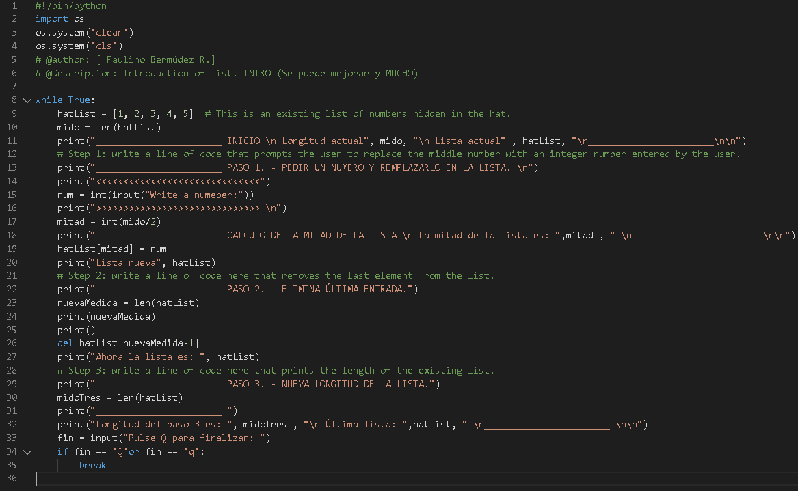
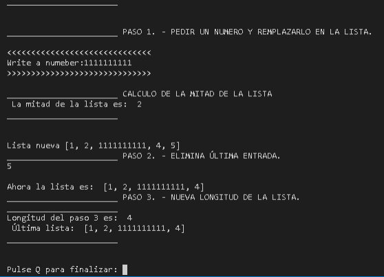Functions vs methods
A methods is a specific kind of function - it behaves like a function and looks like a function, but differs in the way in which it acts, and in its invocation style.
A function doesn't belong to any data - it gets data, it may create new data and it (generally) produces a result.
A method does all these, but is also able to change the state of a selected entity.
A method is owned by the data ir works for, while a function is owned by the whole code.
This also means that invoking a method requires some specification of the data from which the method is invoked.
It may sound puzzling here, but we'll deal with it in depth when we delve into object-oriented programming.
In general, a typical function invocation may look like this:
result = function(arg)
The function takes an argument does something and returns a result. A typical method invocation usually looks like this:
result = data.method(arg)
Note: The name of the method is preceded by the name of the data which owns the method. Next, you add a dot, followed by the method name and a pair of parenthesis enclosing the arguments. The method will behave like a function but can do something more - ir can change the internal state of the data from which it has been invoked.
You may ask: Why are we talking about methods, not about lists?
This is an essential issue right now, as we're going to show you how to add new elements to an exiting list. This can be done methods owned by all the lists not by functions.
Adding elements to a list: append() and insert()
A new element may be glued to the end of the existing list:
list.append(value)
Such an operation is performed by a method named append(). It takes its argument's value and puts it at the end of the list which owns the method. The list's length then increases by one.
The insert() method is a bit smarter - it can add a new element at any place in the list, not only at the end.
list.insert(location, value)
It takes two arguments:
- The first shows the required location of the element to be inserted; note: all the existing elements that occupy locations to the right of the new element (including the one at the indicated position) are shifted to the right, in order to make space for the new element.
- The second is the element to be inserted.
Add the following snippet after the last line of code in the editor:
numbers.insert(1, 333)Print the final list content to the screen and see what happens. The snippet above snippet inserts 333 into the list, making it the second element. The former second element becomes the third, the third the fourth, and so on.

Adding elements to a list. Continued
You can start a list's life by making it empty (this is done with an empty pair of square brackets) and then adding new elements to it as needed.
Take a look at the snippet in the editor. Try to guess its output after the for loop execution. Run the program to check if you were right.
It'll be a sequence of consecutive integer numbers from 1 (you then add one to all the appended values) to 5.
We've modified the snippet a bit:
myList = [] # creating an empty list for i in range(5): myList.insert(0, i + 1) print(myList)

Making use of lists
The for loop has a very special variant that can process lists very effectively - let's take a look at that.
Let's assume that you want to calculate the sum of all the values stored in the myList list.
You need a variable whose sum will be stored and initially assigned a value of 0 - Its name will be total.
Note: We're not going to name it sum as Python uses the same name for one of its built-in functions - sum(). Using the same name would generally be considered a bad practice.) Then you add to it all the elements of the list using the for loop. Take a look at the snippet in the editor.
Let's comment on this example:
- The list assigned a sequence of five integer values.
- The 'i' variable takes the value
0,1,2,3,4and then it indexes the list, selecting the subsequent elements: the first, second, third, dourth and fifth. - Each o f these elements is added together by the
+=operator to thetotalvariable. - Note the way in which the
len()function has been employed - it makes the code independent of any possible changes in the list's content

The second face of the for loop.
But the for loop can do much more. It can hide all the actions connected to the list's indexing, and deliver all the list's elements in a handy way.
This modified snippet shows how it works:
What happends here?mylist = [10,1,8,3,5] total=0 for i in mylist: total += i print(total)
-
The
forinstruction specifies the variable used to browse the list (ihere) followed by theinkeyword and the name of the list being processed(myListhere). -
The
ivariable is assigned the values of all the subsequent list's elements, and the process occurs as many times as there are elements in the list. -
This means that you use the
ivariable as a copy of the elements values and you don't need to use indices. -
The
len()function is not needed here, either.
List in action
Let's leave lists aside for a short moment and look at one intriguing issue.
Imagine that you need to rearrange the elements of a list, i.e., reverse the order of the elements: the first and the fifth as well as the second and fourth elements will be swapped. The third one will remain untouched.
Question: how can you swap the values of two variables?
Take a look at the snippet:
If you do something like this, you wouldvar1 = 1 var2 = 2 var2 = var1 var1 = var2
lose the value previously stored in var2. Changing the order of the assignements will not help. You need a third variable that serves as an auxiliary storage. This's how you can do it.
Python offers a more convenient way of doing the swap - take a look:var1 = 1 var2 = 2 aux = var1 var1 = var2 var2 = aux
Clear, effective and elegant, isn't it?var1 = 1 var2 = 2var1,var2 = var2, var1

Litst in action
Now you can easiy swap the list's elements to reverse their order.
Run the snippet. Its output should look like this:myList = [10, 1, 8, 3, 5] myList[0], myList[4] = myList[4], myList[0] myList[1], myList[3] = myList[3], myList[1] print(myList)
[5, 3, 8, 1, 10]It looks fine with five elements.
Will still be acceptable with a list containing 100 elements? No, it won't. Can you use the
for loop to do the same thing automatically, irrespective of the list's length?
Yes, you can. This is how we've done it.
Note:myList = [10, 1, 8, 3, 5] length = len(myList) for i in range(length // 2): myList[i], myList[length-i-1]=myList[length-i-1], myList[i] print(myList)
- We've assigned the length variable with the current list's length (this makes our code a bit clearer and shorter).
-
We've launched the for loop to run through its body
length // 2times (this works well for lists with both even and odd lengths, because when the list contains an odd number of elements, the middle one remains untouched). -
We've swapped the ith element (from the beginning of the list) with the one with an index equal to (
length-i-1) (from the end of the list); in our example, foriequal to 0 the (l-i-1) gives 4; for i equal to 1, it gives 3 - this is exactly what we needed.

The basics of lists - the Beatles
Estimated time
10-15 minutesLevel of difficulty
EasyObjectives
Familiarize the student with:- creating and modifying simple lists.
- using methods to modify lists.
Scenario
The Beatles were one of the most popular music group of the 1960s, and the best-selling band in history. Some people consider them to be the most influential act of the rock era. Indeed, they were included in Time magazine's compilation of the 20th Century's 100 most influential people.The band underwent many line-up changes, culminating in 1962 with the line-up of John Lennon, Paul McCartney, George Harrison, and Richard Starkey (better known as Ringo Starr).
Write a program that reflects these changes and lets you practice with the concept of lists. Your task is to:
- Step 1: create an empty list named beatles.
- Step 2: use the append() method to add the following members of the band to the list: John Lennon, Paul McCartney, and George Harrison.
- Step 3: use the for loop and the append() method to prompt the user to add the following members of the band to the list: Stu Sutcliffe, and Pete Best.
- Step 4: use the del instruction to remove Stu Sutcliffe and Pete Best from the list.
- Step 5: use the insert() method to add Ringo Starr to the beginning of the list.

Key takeaways
1. The list is a type of data in Python used to store multiple objects. It is an ordered and mutable collection of comma-separated items between square brackets, e.g.:
myList = [1, None, True, "I am a string", 256, 0]2. Lists can be indexed and updated, e.g.:
myList = [1, None, True, 'I am a string', 256, 0]
print(myList[3]) # outputs: I am a string
print(myList[-1]) # outputs: 0
myList[1] = '?'
print(myList) # outputs: [1, '?', True, 'I am a string', 256, 0]
myList.insert(0, "first")
myList.append("last")
print(myList) # outputs: ['first', 1, '?', True, 'I am a string', 256, 0, 'last']
3. Lists can be nested, e.g.: myList = [1, 'a', ["list", 64, [0, 1], False]]. You will learn more about nesting in module 3.1.7 - for the time being, we just want you to be aware that something like this is possible, too.
4. List elements and lists can be deleted, e.g.:
Again, you will learn more about this in module 3.1.6 - don't worry. For the time being just try to experiment with the above code and check how changing it affects the output.myList = [1, 2, 3, 4] del myList[2] print(myList) # outputs: [1, 2, 4] del myList # deletes the whole list
5. Lists can be iterated through using the for loop, e.g.:
6. ThemyList = ["white", "purple", "blue", "yellow", "green"] for color in myList: print(color)
len() function may be used to check the list's length, e.g.:
myList = ["white", "purple", "blue", "yellow", "green"]7. A typical function invocation looks as follows: result = function(arg), while a typical method invocation looks like this:result = data.method(arg).
print(len(myList)) # outputs 5
del myList[2]
print(len(myList)) # outputs 4
Exercises
Exercise 1
Exercise 2
Exercise 3
Exercise 4
The bublle sort
Now that you can effectively juggle the elements of lists, it's time to learn how to sort them. Many sorting algorithms have been invented so far, which differ a lot in speed, as well as in complexity. We are going to show you a very simple algorithm, easy to understand, but unfortunately not too efficient, either. It's used very rarely, and certainly not for large and extensive lists. Let's say that a list can be sorted in two ways:
- Increasing (or more precisely - non-decreasing) - if in every pair of adjacent elements, the former element is not grater than the latter.
- Decreasing (or more precisely - non-increasing) - if in every pair of adjacent elements, the former element is not less than the latter.
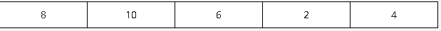
We'll try to use the following approach: we'll take the first and the second elements and compare them; if we determine that they're in the wrong order (i.e., the first is greater than the second), we'll swap them round; if their order is valid, we'll do nothing. A glance at our list confirms the latter - the elements 01 and 02 are in the proper order, as in 8 < 10.
Now look at the second and the third elements. They're in the wrong positions. We have to swap them:
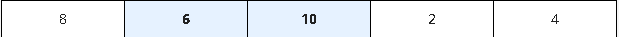
We go further, and look at the third and the fourth elements. Again, this is not what it's supposed to be like. We have to swap them:
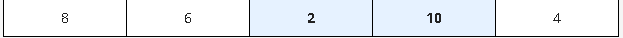
Now we check the fourth and the fifth elements. Yes, they too are in the wrong positions. Another swap occurs:
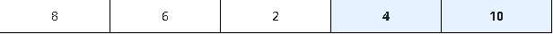
The first pass through the list is already finished. We're still far from finishing our job, but something curious has happened in the meantime. The largest element, 10, has already gone to the end of the list. Note that this is the desired place for it. All the remaining elements form a picturesque mess, but this one is already in place.
Now, for a moment, try to imagine the list in a slightly different way - namely, like this:
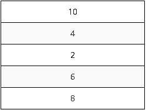
Look - 10 is at the top. We could say that it floated up from the bottom to the surface, just like the bubble in a glass of champagne. The sorting method derives its name from the same observation - it's called a bubble sort.
Now we start with the second pass through the list. We look at the first and second elements - a swap is necessary:
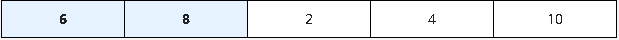
Time for the second and third elements: we have to swap them too:
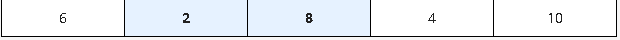
Now the third and fourth elements, and the second pass is finished, as 8 is already in place:
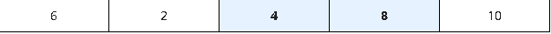
We start the next pass immediately. Watch the first and the second elements carefully - another swap is needed:
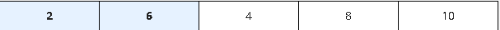
Now 6 needs to go into place. We swap the second and the third elements:
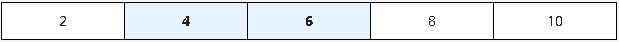
The list is already sorted. We have nothing more to do. This is exactly what we want.
As you can see, the essence of this algorithm is simple: we compare the adjacent elements, and by swapping some of them, we achieve our goal.
Let's code in Python all the actions performed during a single pass through the list, and then we'll consider how many passes we actually need to perform it. We haven't explained this so far, and we'll do that a little later.
Sorting a list
How many passes do we need to sort the entire list?
We solve this issue in the following way: we introduce another variable; its task is to observe if any swap has been done during the pass or not; if there is no swap, then the list is already sorted, and nothing more has to be done.
We create a variable named swapped, and we assign a value of False to it, to indicate that there are no swaps. Otherwise, it will be assigned True.
You should be able to read and understand this program without any problems:myList = [8, 10, 6, 2, 4] # list to sort
for i in range(len(myList) - 1): # we need (5 - 1) comparisons
if myList[i] > myList[i + 1]: # compare adjacent elements
myList[i], myList[i + 1] = myList[i + 1], myList[i] # if we end up here it means that we have to swap the elements
myList = [8, 10, 6, 2, 4] # list to sort swapped = True # it's a little fake - we need it to enter the while loop while swapped: swapped = False # no swaps so far for i in range(len(myList) - 1): if myList[i] > myList[i + 1]: swapped = True # swap occured! myList[i], myList[i + 1] = myList[i + 1], myList[i] print(myList)

The bubble sort - interactive version.
In the editor you can see a complete program, enriched by a cinversation with the user, and allowing the user to enter and to print elements from the list: The bubble sort - final interactive version.
Python, however, has its own sorting mechanisms. No one needs to writes their own sorts, as there is a sufficient number of ready-to-use tools.
We explained this sorting system to you because it's important to learn how to process a list's contents, and to show you how real sorting may work.
If you want Python to sort your list, you can do it like this:
It is as simple as that. The snippet's output is as follows:myList = [8, 10, 6, 2, 4] myList.sort() print(myList)
[2,4,6,8,10]As you can see, all the lists have a method named
sort(), which sorts them as fast as possible. You've already learned about some of the list methods before, and you're going to learn more about others very soon. 
Key takeaways
1. You can use the sort() method to sort elements of a list, e.g.:
2. There is also a list method called reverse(), which you can use to reverse the list, e.g.:lst = [5, 3, 1, 2, 4] print(lst)
lst.sort() print(lst) # outputs: [1, 2, 3, 4, 5]
lst = [5, 3, 1, 2, 4] print(lst)
lst.reverse() print(lst) # outputs: [4, 2, 1, 3, 5]
The inner life of list
Now we want to show you one important, and very surprising, feature of lists, which strongly distinguishes them from ordinary variables.
We want you to memorize it - it may affect your future programs, and cause severe problems if forgotten or overlooked.
Take a look at the snippet in the editor.
The program:
- Creates a one-element list named
list1 - Assigns it to a new list named
list2 - Changes the only element of
list1 - Prints out
list2
Lists (and many other complex Python entities) are stored in different ways than ordinary (scalar) variables.
You could say that:
- The name of an ordinary variable is the name of its content.
- The name of a list is the name of a memory location where the list is stored.
The assignment: list2 = list1 copies the name of the array, not its contents. In effect, the two names (list1 and list2) identify the same location in the computer memory. Modifying one of them affects the other, and viceversa.

Powerful slices.
Fortunately, the solution is at your fingertips - its name is the slice.
A slice is an element of Python syntax that allows you to make a brand new copy of a list, or parts of a list.
It actually copies the list's contents, not the list's name.
This is exactly what you need. Take a look at the snippet below:
Its output is [1].list1 = [1] list2 = list1[:] list1[0] = 2 print(list2)
This inconspicuous part of the code described as [:] is able to produce a brand new list.
One of the most general forms of the slice looks as follows:
myList[start:end]As you can see, it resembles indexing, but the colon inside makes a big difference.
A slice of this form makes a new (target) list, taking elements from the source list - the elements of the indices from start to
end - 1. Note: not to end but to end - 1. An element with an index equal to end is the first element which does not take part in the slicing.
Using negative values for both start and end is possible (just like in indexing).
Take a look at the snippet:
The newList list will have end - start (3 - 1 = 2) elements - the ones with indices equal to 1 and 2 (but not 3). The snippet's output is:myList = [10, 8, 6, 4, 2] newList = myList[1:3] print(newList)
[8, 6]
Slices - Negative indices.
Look at the snippet below:
myList[start:end]To repeat:
- Start is the index of the first element included in the slice.
- End is the index of the first element not included in the slice.
The snippet's output is: [8, 6, 4].myList = [10, 8, 6, 4, 2] newList = myList[1:-1] print(newList)
If the start specifies an element lying further than the one described by the end (from the list's beginning point of view), the slice will be empty:
The snippet's output is: [].myList = [10, 8, 6, 4, 2] newList = myList[-1:1] print(newList)
Slices: Continued
If you omit the start in your slice, it is assumed that you want to get a slice beginning at the element with index 0. In other words, the slice of this form: myList[:end] is a more compact equivalent of: myList[0:end] Look at the snippet below: myList = [10, 8, 6, 4, 2] newList = myList[:3] print(newList) This is why its output is: [10, 8, 6]. Similarly, if you omit the end in your slice, it is assumed that you want the slice to end at the element with the index len(myList). In other words, the slice of this form: myList[start:] is a more compact equivalent of: myList[start:len(myList)] Look at the following snippet: myList = [10, 8, 6, 4, 2] newList = myList[3:] print(newList) Its output is therefore: [4, 2].
Cap. 2
Go to content.
Cap. 4
Go to content.
Cap. 5
Go to content.